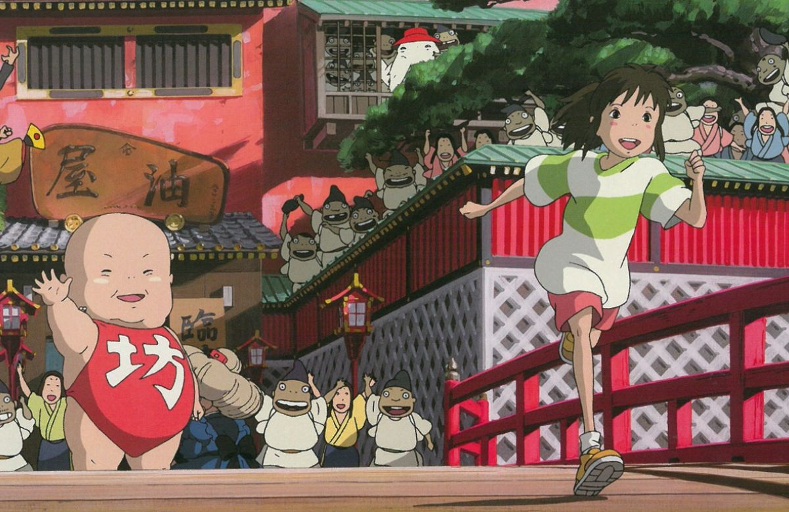

Trak - "Spirited Away" izgleda bolje kot karkoli drugega na glavi. Tako je v središču animacije "Spirited Away" deklica, ki je prišla v čarobni svet duhov in zlih čarovnic. Tukaj je na splošno vse nenavadno, nerazumljivo in skrivnostno. In rešiti bo morala številne uganke, da bi rešila svoje starše, ki so jih odnesli duhovi, pa tudi skrivnostnega zmaja in morda tudi sebe.
Režija: Hayao Miyazaki Glasovi: Rumi Hiragi, Miyu Irino, Mari Natsuki, Takashi Naito, Yasuko Sawaguchi Žanr: Animirana fantazijska pustolovščina Dolžina: 125 minut IMDb: 8,6/10 (top 250 #44)
Akijev oče, Yukova mati in njuna desetletna hči Chihiro se preselijo v novo hišo, ki se nahaja nekje v zaledju
Japonske. Ko so zmedli cesto do nove hiše in se zapeljali skozi čuden gozd, se znajdejo v slepi ulici: ustavijo
se pred visokim zidom, v katerem se vhod zatemni. Ko vstopijo tja in sledijo dolgemu temnemu tunelu, se znajdejo
v stavbi, ki je videti kot železniška postaja, zapustijo pa jo v praznem mestu, skoraj v celoti sestavljenem iz
praznih restavracij. Nikjer ni duše, a ob prijetnem vonju oče najde prazno, a jasno delujočo restavracijo, v
kateri se najde miza, polna od dobrot in najrazličnejših jedi. Mati in oče ostaneta jesti, medtem ko se Chihiro
potepa po mestu. Ko gre ven v veliko zgradbo z napisom "Abura-ya Baths", sreča fanta Hakuja, ki zahteva, da
takoj pobegne od tod. Mrak hitro pade in večer pride, mesto preplavijo čudne sence, ki se pojavljajo od
vsepovsod. Chihiro hiti v restavracijo, kjer bivajo njeni starši, in zgrožena ugotovi, da so se spremenili v
prašiče. Prestrašeni Chihiro teče do kraja, od koder so prišli, a zdaj na poti ni prej pokrit suh skalnati
kanal, ampak široka reka.
Haku najde Chihiro in ji pomaga: odpelje jo do stavbe kopalnice in razloži, kaj se dogaja. Izkazalo se je, da so
bili Chihiro in njegovi starši v čarobnem svetu. Lastnica mesta je čarovnica Yubaba; nadzoruje kopališča in
restavracije, kjer počivajo bogovi, duhovi, duhovi in druga nadnaravna bitja z vsega sveta. Yubaba vse razen
gostov in svojih zaposlenih spremeni v živali. Da bi dobila upanje, da bo rešila svoje starše in se vrnila
domov, mora Chihiro po Hakujevem nasvetu zahtevati delo od Yubabe - v skladu z dolgoletno zaobljubo Yubaba
takšne prošnje ne more zavrniti. S pomočjo novih znancev - dedka Kamajija in spremljevalke v kopalnici Rin -
Chihiro uspe priti do Yubabine pisarne in se tam zaposliti, z njo pa tudi novo ime. Chihiro je zdaj Sen.
Chihiro začne delati v kopališčih, zelo se trudi, v upanju, da bo svojim staršem pomagala povrniti človeško
podobo in najti pot nazaj. Nekoč, v odsotnosti Yubabe, je Chihiro priča Hakuju, ki se vrača od nekod v preobleki
zmaja, ki ga zasleduje jata papirnatih ptic. Ko se prebije do Yubabinih prostorov za Hakujem, Chihiro izve, da
je Haku po Yubabinem ukazu ukradla začarani pečat njeni sestri dvojčici Zenibi in zdaj umira zaradi prekletstva,
naloženega pečatu. S pomočjo Kamajijevega dedka in "grenke torte", ki jo je prej podaril naročnik - duh rek -
Chihiro uniči prekletstvo in tako reši Hakuja pred smrtjo. Po tem se odloči iti v Zenibo, da bi vrnila ukradeni
pečat in prosila za odpuščanje ter ozdravila Hakuja. Chihiro se odpravi na potovanje z vlakom v družbi boga
duhov brez obraza, ki ga je dan prej sama spustila v kopel, pa tudi sina Yubabe Boa in vohunske ptice, ki jo je
Zeniba spremenila v majhno žival in ptiča. Hkrati Haku, ki je prišel k sebi, nagovori Yubaba, da obljubi, da bo
Chihiru dal priložnost, da začara njegove starše in se vrne v svoj svet, če sam vrne svojega sina Yubabi. Haku
gre za Chihirovim in Yubabinim sinom v Zenibo. Zeniba oprosti Hakuju. Chihiro, Haku, Bo in vohunska ptica se
skupaj vrnejo v Yubabino kopel. Med potovanjem nazaj Chihiro pomaga Hakuju, da si zapomni njegovo pravo ime. S
svojimi spomini se Haku razreši dolžnosti služiti Yubabi.
Nazaj v kopališčih Chihiro opravi zadnji test - med prašiči mora spoznati svoje starše. Chihiro pravilno
odgovori, da njenih staršev ni med njimi. Po tem pogodba, ki jo je Chihiro podpisal z Yubabo, izgine. Yubaba
izpusti dekle. Haku pospremi Chihiro in jo opozori, naj se nikakor ne ozira nazaj. Ob poslavljanju pove, da bo
končal posel in se vrnil v resnični svet, kjer se bosta zagotovo srečala.
Ko se vrne nazaj v čudno zgradbo, ki je videti kot železniška postaja, Chihiro sreča očeta in mamo, ki se ne
spomnita ničesar o dogajanju in sta prepričana, da sta se le sprehajala. Celotna družina spet gre skozi predor
in se vrne do avtomobila, ki se v času njihove odsotnosti izkaže, da je močno pokrit z odpadlim listjem in
zaprašen v notranjosti. Presenečeni nad tem dejstvom, vendar mu ne pripisujejo velikega pomena, odidejo.